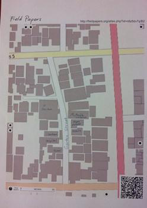
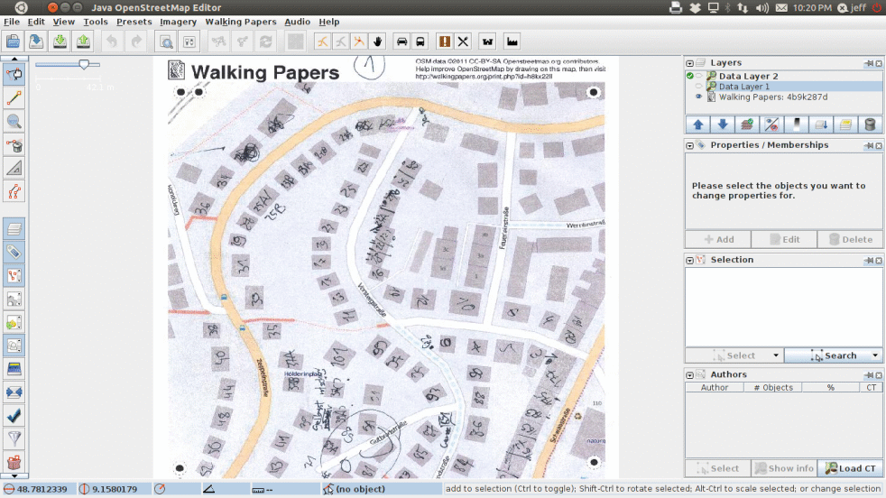
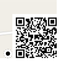
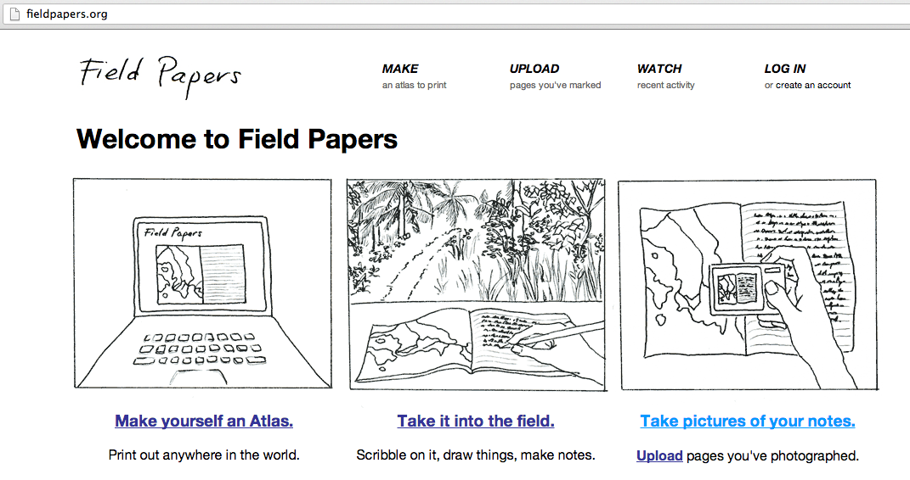
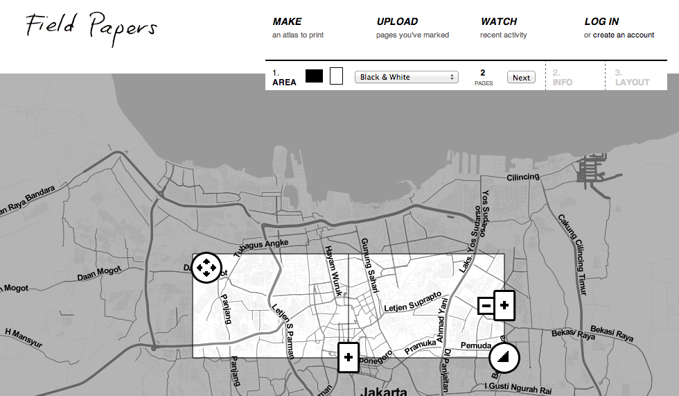

Learning Objectives
Understand how to use Field Papers
Make and print Field Papers
Add information to Field Papers
Scan and upload Field Papers to fieldpapers.org
Open Field Papers in JOSM
In this module we will see how it is possible to record the coordinates of places without a GPS. We will use a tool called Field Papers, which allows you to print a map of an area, draw on it and add notes, and load the paper back into JOSM, where you can add your locations to OpenStreetMap.
Before going into detail about Field Papers, let’s look at an overview of how the process works:
Step 1: Locate the area you want to map on the Field Papers website. Print out a map of this area. You can choose to print the current map of the area with OSM, or you can choose to print aerial imagery, if it is available in your area.
Step 2: Use your printed map to survey the area. Add more places by drawing them on the map. Draw lines for roads, shapes for buildings, and so forth. Write notes about each location directly on the map, or write numbers on the map that relate to numbers in your notebook, where you can record more detailed information about each object.
Step 3: Scan your paper into the computer. If you do not have a scanner, you can take a photograph of the paper, if your camera is able to take high quality pictures. Upload the image to the Field Papers website (http://fieldpapers.org/upload.php).
Step 4: In JOSM, load the Field Paper. Use the objects you drew as a reference to add them digitally into OSM.
If you follow the Field Papers process described above, you will be collecting accurate geographic coordinates of places with nothing more than paper. How is this possible?
When you print a Field Paper, it comes with a square barcode on the bottom of the page. This bar code allows Field Papers to determine the exact location of the map that you are using to survey. Later, when you load the paper back into JOSM, all the objects that you drew will be in shown in their actual locations, or at least quite close, which is good enough for us.
Next let’s learn how to create and use Field Papers.
Open your web browser - this may be Firefox, Chrome, Opera, or Internet Explorer.
In the address bar at the top of the window, enter http://fieldpapers.org/ and press Enter.
The website should look something like this:
Click Make yourself an Atlas.
Enter the name of a place where you would like to print out a map, and press Enter. In this example we will search for jakarta.
Now you are presented with an interface where you can define the boundaries of your Field Paper. The map that you see shows the area that you would like to print on paper. You can print multiple pages, zoom in and out, and drag the papers to cover specific boundaries on the map.
Click on the various buttons to see what each does. Notice that in our example we are presented with a two page set of Field Papers. To add or subtract a page, click on the + and - buttons on the map. It may be easiest to create only one page the first time that you use Field Papers.
Expand or decrease the area of the papers by dragging the button in the lower right corner.
Move the paper by clicking and dragging the button in the upper left corner.
Adjust the paper orientation and type of map using the controls at the top.
When you are finished adjusting the parameters, click Next.
Give your map a name, and if you want, you can add notes to be printed on the map, such as questions you want to remember to answer or specific places you want to identify. Then click Next.
Finally choose your layout. Indicate whether you want pages only for your maps, or if you want notes on the same page. If you choose the notes option, then half of the page will be left for taking notes, and the other half will contain the map.
It may take a few minutes to prepare your Field Paper.
When the print is ready, scroll to the bottom and click Download PDF. The Field Paper should begin downloading. If it loads in your browser, you may need to save it by going to .
When the download is finished, open the PDF file. Connect your computer to a printer and print the page. If everything goes well, you should now have your map printed on paper.
Take your Field Paper outside, and use it as a guide to walk and identify new places that are not on the map.
Draw lines for roads, shapes for buildings, and so forth. Write notes about each location directly on the map, or write numbers on the map that relate to numbers in your notebook, where you can write more detailed information about each object.
When you are satisfied with your additions on the paper map, then you are ready to add them digitally into OSM.
Field Papers are useful for mapping with nothing more than paper, but they are not 100% magic. We will still need to add our paper into JOSM, add our information digitally and save the changes on OSM.
The first step is to scan your Field Paper. Do this by attaching a scanner to your computer, scanning the paper and saving it as an image file. If you don’t have a scanner, take a photograph of the paper, but be careful to take a good quality photo. Make sure that the paper is flat and the camera is directly in front of it. Be sure to include the barcode in the image, as Field Papers will not work without it. Here is an example of a scanned/photographed image:
Once your Field Paper is scanned and saved on the computer, open your web browser and return to the http://fieldpapers.org/ just as before.
Click the Upload tab at the top of the page.
Click Choose File and navigate to the file where you scanned/photographed your Field Paper.
Click Upload. It may take a few minutes for the paper to upload, depending on the speed of your internet connection.
You’ll be able to add additional notes to your Field Paper, but we will skip this for now. Click Finished.
When the scan has been processed, it can be added as a background layer in JOSM. To display Field Papers in JOSM, the fieldpapers plugin must be installed.
Open JOSM and go to .
Go to the Plugins tab.
Type fieldpapers in the Search box. After it is found, check the box next to it. Click OK and restart JOSM.
Open your browser and go to the Field Papers website.
Click Watch. Then move your mouse to the bottom and click Snapshots.
You will see all of the Field Papers that users around the world have uploaded. Find your image, and then click on it.
We need the URL to load the Field Paper into JOSM. The URL is the web address at the top of the page, which will be something like: http://fieldpapers.org/snapshot.php?id=67v87z5n#18/-5.15534/119.43913
Copy the URL by selecting it and pressing CTRL + C.
Open JOSM. Since you installed the plugin, there should be a new Field Papers menu at the top.
Go to and paste the URL by pressing Ctrl + V on your keyboard.
Click OK.
Wait a moment until the Field Paper appears in your JOSM layers.
Now you have a Field Papers layer that can be used as a reference to add OSM data. It is like using imagery to identify objects on the ground, but instead there are detailed drawings and notes from your field survey. Later, when we have learned to access OSM data through JOSM, this can be used as a reference to edit the map.